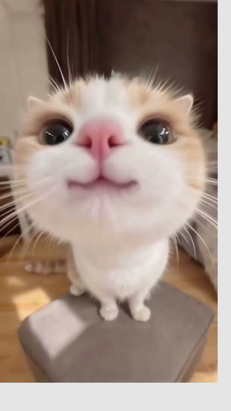

Part 2 – JavaScript
Task 6. A counter with click events
Counter: 0
Task 7. Live text preview
Preview:
Your text will appear here
Characters: 0
Task 8. Change an image with a select control

Cat: a fluffy cat looking straight into the camera.
Task 9. Keyboard events
Status: No key pressed yet
Result:
Task 10. Mouse and focus events
Hover or focus me
Move the mouse over the card or press Tab to focus it.
- Mouseenter: pointer enters the card, so the highlight is added and the text changes.
- Mouseleave: pointer leaves the card, so the highlight is removed and the text is restored.
- Focus: the card gets keyboard focus (Tab), same effect as mouseenter.
- Blur: the card loses focus, same effect as mouseleave.